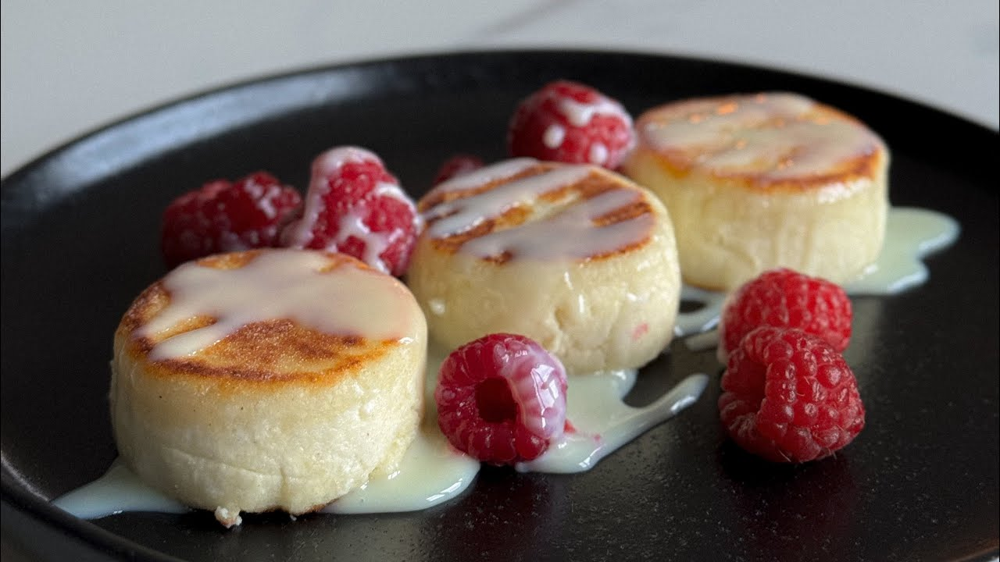

Мой любимый рецепт

Ингредиенты:
- 500 г творога
- 1 яйцо
- 3 столовые ложки муки
- 1 столовая ложка сахара
- щепотка соли
Приготовление:
- Смешать творог, яйцо, сахар и соль.
- Добавить муку и перемешать.
- Сформировать небольшие сырники.
- Обжарить с двух сторон до золотистой корочки.